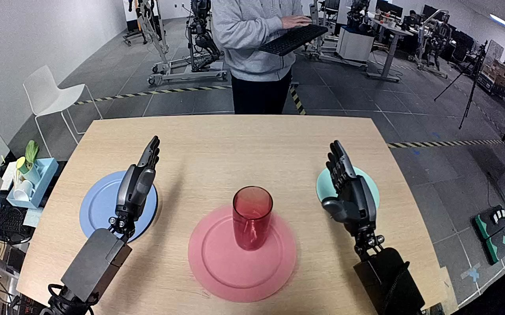

NVIDIA GR1 · 99
Video 99

Visual review action_review.json
{
"prompt_protocol": "humanoid_action_v1",
"prompt_provenance": "visually_authored_from_video_and_initial_frame",
"reviewed_contact_sheets": [
"sheet_001.jpg"
],
"inspected_frame_stride": 2,
"inspected_sampled_frame_count": 60,
"initial_scene": "An egocentric view looks between the two robot forearms across a tabletop. A translucent reddish-orange cylindrical drinking glass stands on the central pink plate; the empty pale turquoise plate is beside the right hand, and the blue plate is beneath the idle left hand.",
"observed_sequence": [
{
"start_frame": 0,
"end_frame": 19,
"action": "Both hands remain open beside the plates; the glass remains on the pink plate.",
"confidence": "high"
},
{
"start_frame": 20,
"end_frame": 57,
"action": "The right arm reaches inward toward the glass, positioning its open fingers and opposed thumb around the cylindrical body while the left hand stays open and still.",
"confidence": "high"
},
{
"start_frame": 58,
"end_frame": 69,
"action": "The right fingers curl around the glass and the thumb closes against the opposite side to establish a grasp on the pink plate.",
"confidence": "high"
},
{
"start_frame": 70,
"end_frame": 89,
"action": "The right hand lifts the glass off the pink plate and transports it toward the turquoise plate without assistance from the left hand.",
"confidence": "high"
},
{
"start_frame": 90,
"end_frame": 107,
"action": "The right hand lowers the glass over the turquoise plate until the glass base rests within the plate.",
"confidence": "high"
},
{
"start_frame": 108,
"end_frame": 119,
"action": "The right fingers and thumb open beside the glass. Its base remains on the turquoise plate, and the hand remains adjacent rather than withdrawing clear.",
"confidence": "high"
}
],
"arm_hand_roles": {
"right": "Active manipulation: reaches, surrounds the glass with dexterous fingers and opposed thumb, grasps, lifts, carries to the turquoise plate, lowers and opens beside it.",
"left": "Idle open hand above the blue plate throughout; no grasp, stabilization or hand-to-hand transfer.",
"coordination": "The task is performed by the right hand alone. The two hands do not contact one another or jointly support the object."
},
"anatomical_side_evidence": "The camera looks forward and downward from the robot viewpoint. The active forearm extends from the lower-right side of the viewpoint toward the tabletop and the idle forearm extends from the lower-left. The active hand has its opposed thumb on the inward/left side when initially facing the camera, consistent with the robot right hand; the other hand mirrors this. Side naming is grounded in the egocentric forearm origin and hand anatomy, rather than a front-facing image-left/image-right assumption. The shoulders and torso are outside the image.",
"terminal_state": "The pink plate is empty. The glass base rests within the pale turquoise plate and the right hand is open immediately beside the glass; no later withdrawal or extended settling interval is shown. The left hand is still open above the blue plate.",
"uncertainties": [
"The right hand remains very close to the glass at the final frame; complete clearance at every finger and subsequent unassisted stability are not visible. The prompt describes the observed hand opening without claiming a later withdrawal or settled state."
],
"annotation_discrepancies": [
"The instruction calls the object orange; the observed translucent glass appears reddish-orange/red under the lighting. The right-hand transfer and turquoise destination agree with the annotation."
],
"evidence_frame_indices": [
0,
56,
66,
76,
88,
104,
112,
116,
118,
119
],
"selected_execution_status": "success",
"execution_status_basis": "The glass visibly leaves the pink plate and its base reaches the turquoise plate; right-hand opening is visible. Success here refers to the observed transfer/placement, without asserting later stability.",
"inspection_coverage": {
"all_source_frames": 120,
"sampled_frame_indices": "0, 2, 4, ... 118",
"sampled_count": 60,
"native_initial_png_inspected": true,
"native_transition_and_terminal_frames_inspected": [
56,
66,
76,
88,
104,
112,
116,
118,
119
],
"complete_original_sequence_retained": true
},
"video_id": "99",
"dataset": "NVIDIA_GR1_100",
"dedicated_review_agent": "review_gr1_99",
"review_source_video": "NVIDIA_GR1_100/99/original/original.mp4",
"source_frame_count": 120,
"source_fps": 20.0,
"native_detail_frames": [
56,
66,
76,
88,
104,
112,
116,
118,
119
],
"world_model_prompt": "The robot closes its right fingers and thumb around the translucent reddish-orange glass on the pink plate, lifts it clear, and carries it to the pale turquoise plate. It lowers the glass until its base rests on the turquoise plate, then opens its right hand beside the glass. Keep the camera fixed; preserve robot geometry, physically valid joint motion, and normal gripper opening and closing.",
"original_task_instruction": "Use the right hand to pick up orange glass from pink plate to pale turquoise plate.",
"selected_segment": {
"start_frame": 0,
"end_frame_exclusive": 120,
"reason": "Complete original single-task reference; no cropping or trimming requested."
},
"source_video_sha256": "9486a40959b15d4d33c252a3a91bedd07a53cf51408136d96626103207bb3178",
"review_completed_at": "2026-10-13T18:48:49.785021+00:00"
}